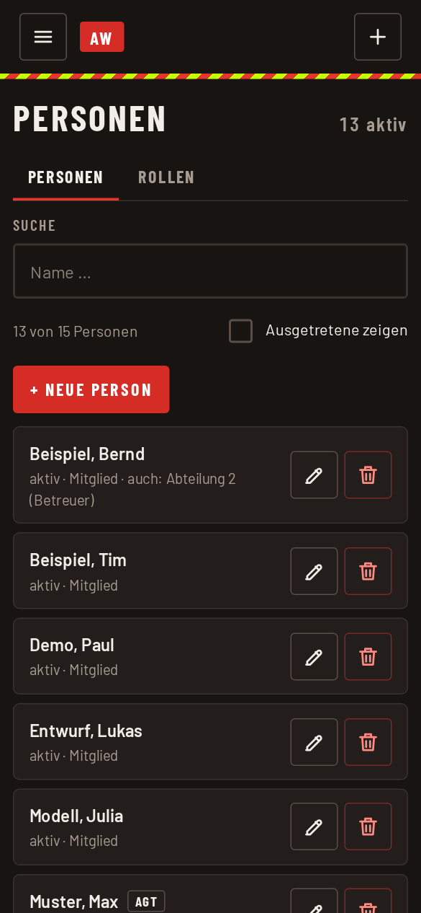

Personen verwalten
Die Liste der Personen gilt für beide Apps. Hier pflegen Admin und Abteilungsadmin (für die eigene Abteilung) die Stammdaten. Im Menü: „Personen verwalten“.
Person anlegen oder ändern
- Oben die Abteilung wählen. Mit der Suche lässt sich die Liste eingrenzen.
- „+ Neue Person“ antippen oder bei einer vorhandenen Person auf Bearbeiten.
- Nachname und Vorname eintragen. Eintritt und Austritt sind freiwillig.
- Unter Abteilungen festlegen, zu welcher Abteilung die Person gehört und mit welcher Rolle. Dieselbe Person kann in zwei Abteilungen verschiedene Rollen haben, etwa Betreuer in der Jugend und Mitglied in der Einsatzabteilung.
- Speichern.

Namen sind eindeutig: Eine Person, die es schon gibt, legt die App nicht noch einmal an. Zum selben Menschen in einer zweiten Abteilung weist ihr die vorhandene Person zu, statt sie neu anzulegen. Dafür gibt es „Abteilung zuordnen“.
Austritt
Wer die Wehr verlässt, wird auf nicht aktiv gesetzt und nicht gelöscht. So verschwindet die Person aus den Auswahllisten, bleibt aber in den Auswertungen vergangener Jahre erhalten. Mit „Ausgetretene zeigen“ blendet ihr sie in der Liste wieder ein.
Doppelte Einträge zusammenführen
Gibt es denselben Menschen zweimal, etwa wegen unterschiedlicher Schreibweisen, hilft „Zusammenführen“. Die Person, die eingegliedert wird, wird anschließend gelöscht. Ihre Teilnahmen gehen auf die andere Person über. Das lässt sich nicht rückgängig machen, prüft die Auswahl deshalb genau.
Rollen
Auf dem Reiter Rollen steht die Liste der Rollen innerhalb einer Abteilung, in der Jugend etwa „Jugendlicher“ und „Betreuer“. Die Auswertung trennt den Teilnehmerdurchschnitt danach. Neue Rollen legt der Admin an.